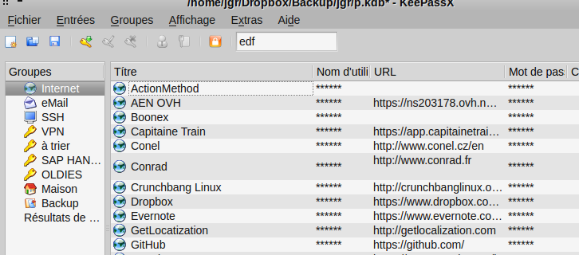

Gestion de mes différents mots de passe
Nov 2012
- Choix d'un password
- Outils
- Two Factors Authentication (?!)
Fichier texte / Post-it
America On Line : jgraglia / xxxxx
Caramail : jgraglia@xxxx.com / xxxx
Le même fichier texte ... mais dans un volume TrueCrypt
Twitter : jgraglia / xxxxx
Google : jgraglia@xxxx.com / xxxx
Les mêmes informations... mais dans un trousseau KeePassX
|  |
|
Trousseau + partage réseau SpiderOak